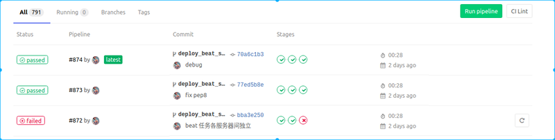
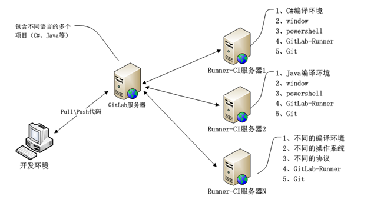

持续集成是一种软件开发实践，即团队开发成员经常集成它们的工作，通过每个成员每天至少集成一次，也就意味着每天可能会发生多次集成。每次集成都通过自动化的构建（包括编译，发布，自动化测试）来验证，从而尽早地发现集成错误。gitlab一般用Gitlab-CI，而github一般用jenkins，主要功能是在你提交或merge代码到仓库后，自动执行一些你定义好的命令， 比如安装依赖、单元测试、pep8检查、甚至还可以自动部署到生成环境。前段时间自己给当前做的项目加上了gitlab-ci,实现的主要功能是提交代码后自动检测安装依赖有没有问题，单元测试能不能通过， pep 8 规范检查是否合格，有一项不合格就会在提交的分支或merge后面有个显目的红叉， 全通过的话则是一个赏心悦目的绿色对勾。

GitLab简单原理图

安装和配置Runner
首先， gitlab ci 需要单独部署在一台服务器上来运行， 对应的程序是GitLab Runner,
在ubuntu和centos上安装都是先根据一个shell脚本安装各种依赖， 然后再执行安装程序。1
2
3
4
5
6# For Debian/Ubuntu
$ curl -L https://packages.gitlab.com/install/repositories/runner/gitlab-ci-multi-runner/script.deb.sh | sudo bash
$ sudo apt-get install gitlab-ci-multi-runner
# For CentOS
$ curl -L https://packages.gitlab.com/install/repositories/runner/gitlab-ci-multi-runner/script.rpm.sh | sudo bash
$ sudo yum install gitlab-ci-multi-runner
为了能够让GitLab Runner 能够连接到我们的项目上需要注册操作：
sudo gitlab-runner register
然后根据提示输入配置信息（这些信息可以在项目的gitlab网站的CI/CD 配置里找到， 需要master权限）1
2
3
4
5
6
7
8
9
10
11
12
13
14
15
16
17
18
19
20Please enter the gitlab-ci coordinator URL (e.g. https://gitlab.com )
https://gitlab.com //项目gitlab的根域名， 一般公司都会部署自己内部使用的gitlab
Please enter the gitlab-ci token for this runner
xxx // gitlab token, 每个项目都不一样
Please enter the gitlab-ci description for this runner
[hostame] my-runner // 项目描述， 起个名称
Please enter the gitlab-ci tags for this runner (comma separated):
my-tag,another-tag // 给该 Runner 指派 tags, 稍后也可以在 GitLab's UI 修改, 这里也可以直接回车， 使用默认值
Whether to run untagged jobs [true/false]:
[false]: true // 选择 Runner 是否接收未指定 tags 的任务（默认值：false）， 稍后可以在 GitLab's UI 修改
Whether to lock Runner to current project [true/false]:
[true]: false // 该runner是否只能运行当前指定项目（根据token来判断的），默认值：true：
Please enter the executor: ssh, docker+machine, docker-ssh+machine, kubernetes, docker, parallels, virtualbox, docker-ssh, shell:
shell // 选择runner的类型， 这里用shell就好
配置完成， sudo gitlab-runner list 可以查看当前runner的状态。
pipeline 配置
GitLab Runner 启动成功后接下来就是在你的项目里配置gitlab ci要干哪些事情了， 在项目的根目录新建一个.gitlab-ci.yml 文件，在里边配置代码commit后gitlab ci要干的事情。一个简单的示例如下：1
2
3
4
5
6
7
8
9
10
11
12
13
14
15
16# 定义 stages
stages:
- build
- test
# 定义 job
job1:
stage: test
script:
- echo "I am job1"
- echo "I am in test stage"
# 定义 job
job2:
stage: build
script:
- echo "I am job2"
- echo "I am in build stage"
执行顺序如下：
- stages里的stage按顺序执行， 如果有一个stage执行失败， 结束， 不再往下执行。
- 执行每个stage时，stage里的job并行执行， 所有job都执行成功该stage才算成功， 有一个失败的话该stage执行失败， 结束。
此外，还有连个非常有用的选项——before_script 和 after_script, 分别对应着每个job执行前后要运行的额外代码。
更多的配置选项可以看gitlab ci的官方文档
pep 8
当多人参与一个项目时， 统一代码规范就很重要。 python一般用的是pep 8， 用flake 8 可以很方便做到。
- 安装
pip install flake8 pep8-naming
- 在项目根目录下新建一个.flake8配置文件
- 配置文件内容大概如下（不要出现中文， 后面的注释是为了便于读者理解额外添加的）：
1
2
3
4
5
6
7
8
9
10
11
12
13
14
15
16
17
18
19
20
21
22[flake8]
ignore = W292 W391 E126 W291 N805 // 忽略的格式类型
exclude = // 忽略的文件、文件夹
*migrations*,
# python related
*.pyc,
.git,
__pycache__,
*.conf,
*.md,
config*
*settings*
manage.py
gold/vulpo/*
max-line-length=125 // 单行最大字数
max-complexity=16 // 复杂度上限
format=pylint
show_source = True
statistics = True
count = True
当然， 记得在.gitlab-ci.yml 中添加一个执行pep 8 检查的job：1
2
3
4
5pep8_test:
stage: pep8
script:
- flake8 gold
# allow_failure: true // 有追求的程序员当然不会允许pep 8 检查不通过